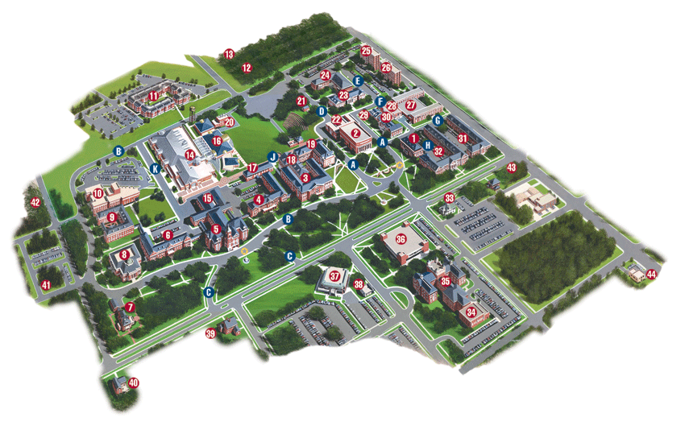

Studying Strategies
- Make prioritized lists of what needs to done. Not everything can be a top priority. Start with the highest priorities and work your way through the list.
- Make schedules and stick to them. The person who insists upon waiting for "free time" to accomplish a task seldom accomplishes the task. Make your own free time. Schedule it.
- Avoid perfectionism. You can often complete 80% of a task in 20% of the time.
- Learn to use short periods of time effectively. Short periods of time offer excellent opportunities for recall and review of information. Carry a notebook that you can study if you must wait for an appointment. Carry 3x5 cards with formulas and facts to learn or memorize. Use the time between classes to review lecture notes and to prepare for your next class.
- Work on your most difficult and least favorite assignments first. These require the most energy and creativity. Do them when you are fresh. Save the ones you most enjoy for last.
Page Footer
Campus Map

Page Footer
Additional Resources
Content
Page Footer